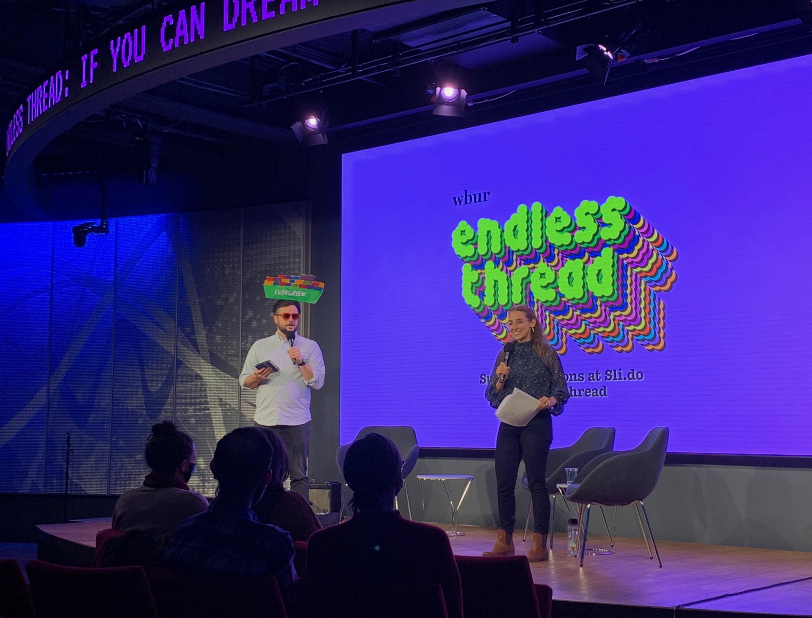
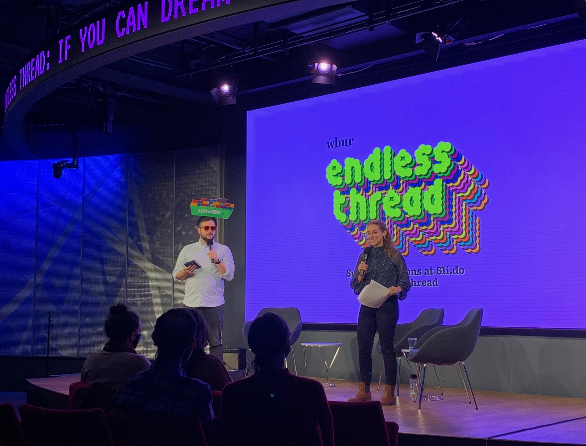

Endless Thread
Podcast Identity, 2021
Logo and identity redesign for WBUR’s Endless Thread podcast. Art direction of retro computer solitaire inspired logo animations by Mark Buenafe.
All made in collaboration with Mary Banas of Yes Is More.
Using a modified version of TINY by Jack Fahnestock.

 
